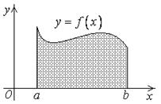
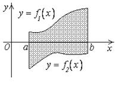
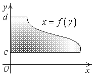

1.1. Вычисление площади в прямоугольных координатах
1)
Площадь
криволинейной трапеции, лежащей выше оси OX
.

2)
Площадь
фигуры, заключенной между двумя криволинейными трапециями на отрезке
.

3)
Площадь
криволинейной трапеции (относительно оси OY), лежащей
справа от OY
.
